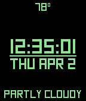
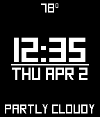
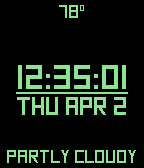
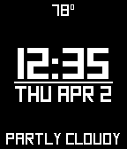

Hi!
I'm Turner, a recent high school grad living in Vancouver, BC. I'm going to the British Columbia Institute of Technology in January 2017 for their computer systems technology program, but right now I'm working on my projects for the Pebble smartwatch and helping people out with their design projects. You can check out some of my projects below!
 


